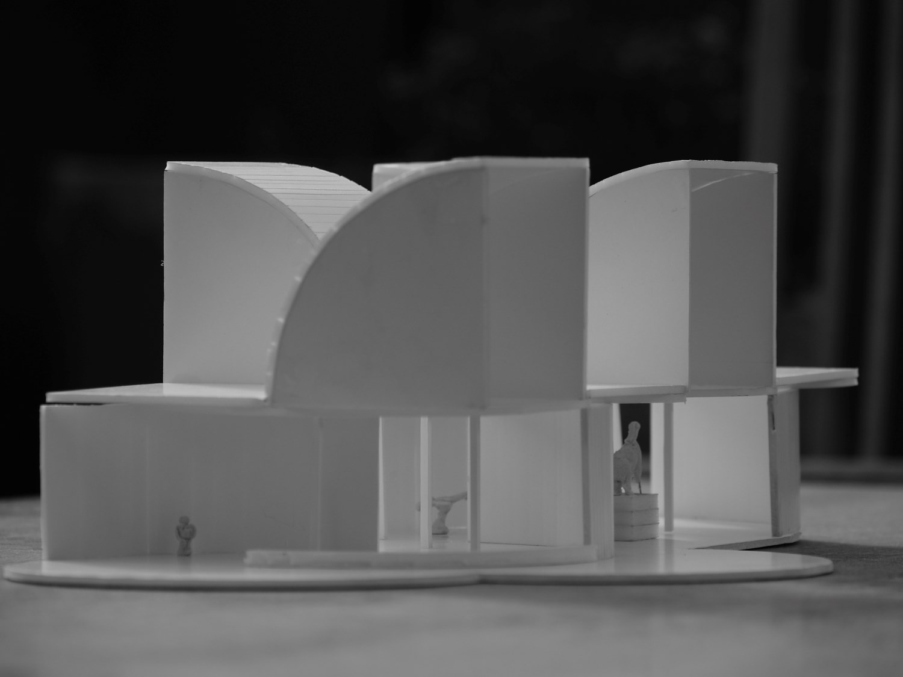
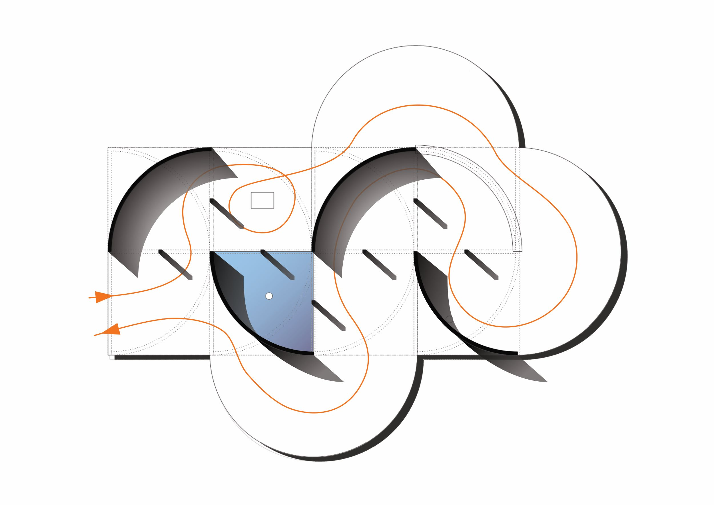
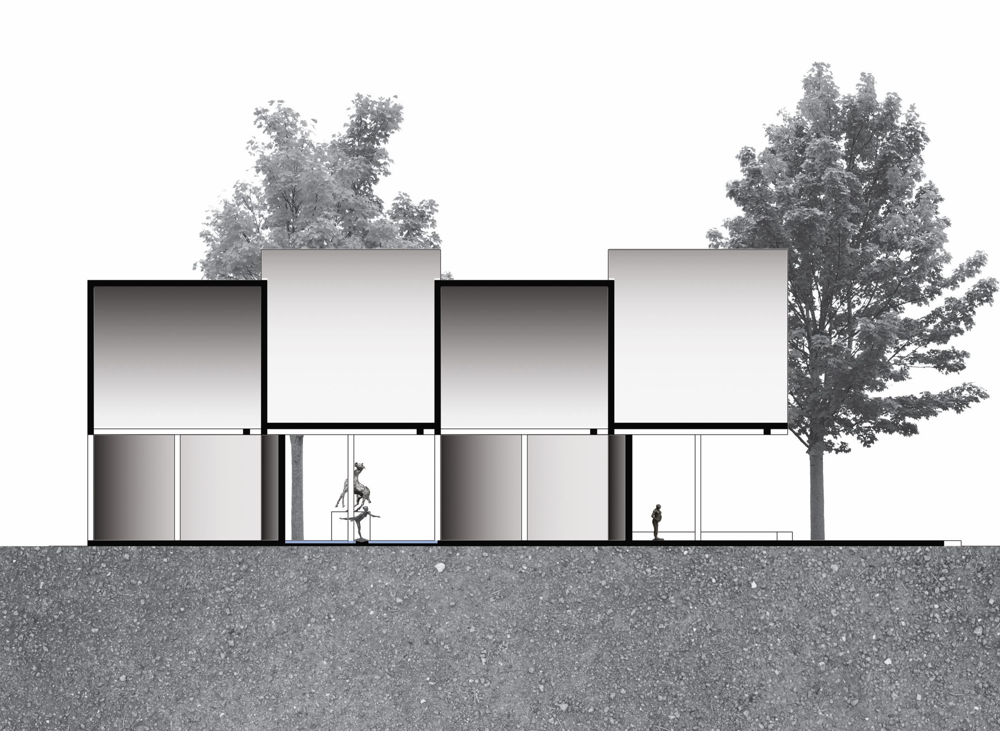

Context i Requeriments
- Adaptació d'una estructura preexistent per un discurs artístic.
- Integració de tres escultures d'Edgar Degas, un banc i un element d'aigua.
El Projecte
L'espai s'articula a través de la dualitat entre "armadura" i interior, utilitzant una geometria corbada per dirigir la mirada. L'experiència s'arela en un canvi de percepció: la transició d'una visió externa i distant cap a una d'interna i íntima. .
A l'inici, la visita es planteja com una trobada inhòspita dins d'un espai tancat. La disposició de les peces genera una tensió immediata: un cavall que s'enfronta a l'espectador i una figura que nega el seu rostre. No obstant això, a mesura que s'avança, el recorregut definit per la paret i el mobiliari obliga a un canvi de perspectiva. De sobte, mitjançant aquest canvi de perspectiva, l'arquitectura es despulla per revelar el seu contingut més fràgil: una dona embarassada emparada per la concavitat de la paret. En completar el cicle, la figura que inicialment girava l'esquena ofereix ara un gest de comiat, complint una narrativa espacial on el recorregut ha transformat l'agressivitat en proximitat


